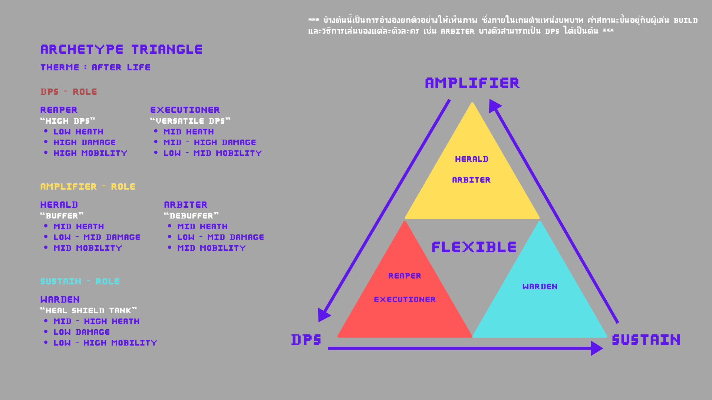
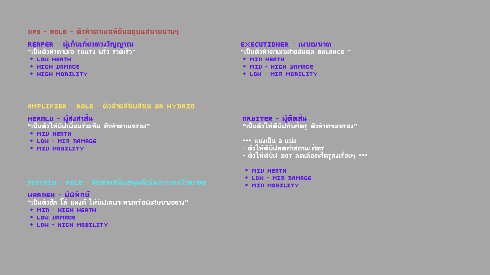
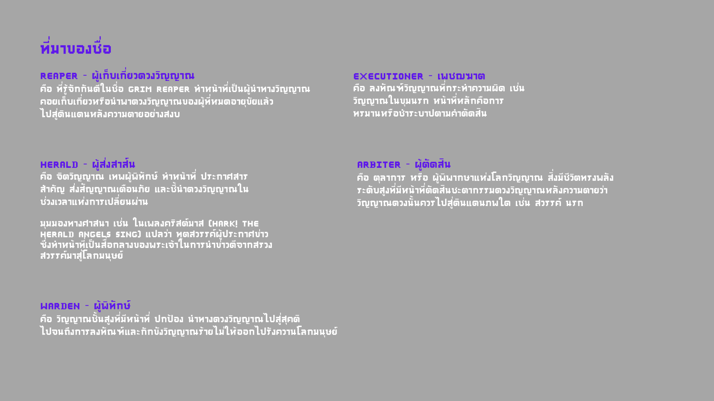
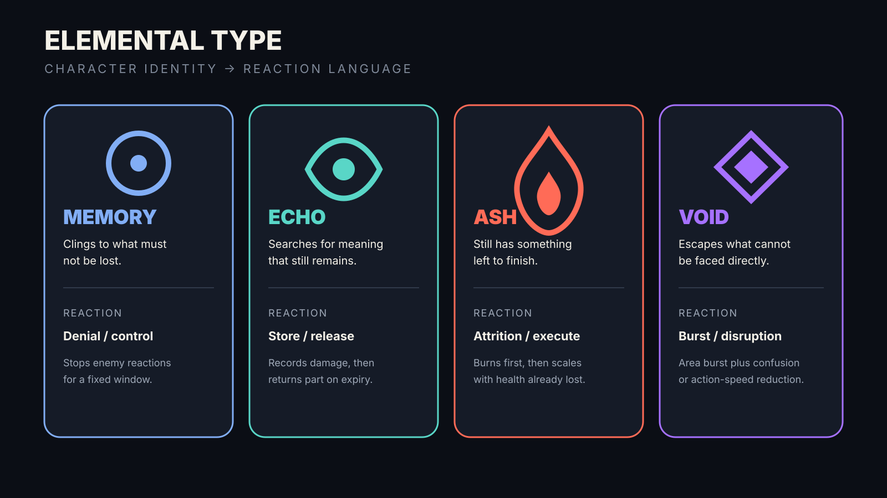
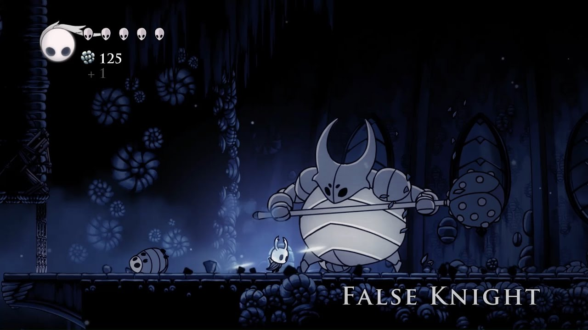

Discipline 01
Game Design
The intended player experience, combat rules, team expression, progression, encounter language, and current playable content.
01 / Identity
Casual execution, strategic preparation
The game avoids fighting-game execution complexity. Mastery lives in team construction, action timing, resource use, and responding to readable threats.
Fast hack & slash
Short, understandable action kits keep attention on movement, targets, cooldowns, and impact rather than long command strings.
Beat them, acquire them
Boss rivals become playable pool candidates. The Soul Shop turns characters, Artifacts, consumables, and duplicates into run decisions.
Build through rotation
Three characters cover damage, setup, control, or survival. Swapping is a deliberate rhythm rather than a combo-system substitute.

Dungeon Slasher — room pressure
Reference for direct side-scrolling combat, readable lanes, and character-build pacing.
Identity reference · steamusercontent.com
BlazBlue Entropy Effect — pace
Reference for high-energy character differentiation, simple action readability, and rogue-lite structure.
Identity reference · microsoft.comProduction constraint
Low implementation burden is part of the design. Prefer a clear reusable rule over a bespoke mechanic, and sell power with layered VFX/audio rather than animation volume or strict execution.
02 / Loop
Run loop and combat cadence
The target macro loop is room-driven. The current prototype proves combat, shop, progression ownership, and two-scene transitions, but not yet a complete randomized run.
PrepareDraft three characters and equip Artifacts.
EnterCross the sealed room boundary into combat.
ClearFight, rotate, manage AE, and survive pressure.
ChooseTake one reward, resource, or route.
EscalateFace elites, shops, and boss patterns.
ResolveWin or fail; retain only permanent progression.

Room-to-room combat cadence
Reference for fast entry, compact combat pressure, a decisive clear, and a quick return to run choices.
Core-loop reference · digitalchumps.comMoment-to-moment
Approach → Basic loop → Skill/Ultimate → swap setup/support → return to DPS → dodge threats → repeat.
Session arc
Lobby → authored room sequence → reward/shop branches → boss → result → persistence/reset.
03 / Combat
Authorable actions with explicit state authority
Every action declares Ground, Air, or Both context and executes authored Startup, Active, Recovery, Cancel, and Done phases. State rules determine what may interrupt.
Basic Attack
Readable 2–3 hit core loop. Fast, repeatable, and forward-facing; VFX and hit feedback carry the impact.
Skill
One primary active ability per release kit. Cooldown-gated with an obvious damage, setup, movement, shield, or control purpose.
Ultimate
High-impact authored action gated by full Aura Energy and, when configured, an additional cooldown.
Dash / Jump
Responsive survival and traversal verbs, including double jump, authored air-dash limits, and one-way-platform drop-through.

Action impact and phase clarity
Reference for readable wind-up, active attack shape, recovery, and high-impact Skill/Ultimate delivery.
Combat reference · wutheringlab.comCurrent input map
| Input | Verb | Runtime rule |
|---|---|---|
| A / D | Move | Horizontal movement and directional action context. |
| Space | Jump | Jump/double jump; near-simultaneous grounded Jump + Attack/Skill prioritizes Jump. |
| LMB / RMB | Basic / Skill | State-authorized actions with 0.15-second buffers. |
| Left Shift | Dash | Ground/air eligibility and cooldown come from character movement/dash data. |
| R | Ultimate | Requires resolved action availability, full AE cost, and any authored cooldown. |
| S + Space | Drop through | Available only when grounded on a one-way platform. |
| 1 / 2 / 3 | Team slot | 0.35-second slot buffer; legal only from grounded locomotion or recovery boundary. |
Aura Energy
Stored per character. Confirmed hits independently roll Low 5%, Medium 10%, or High 15% for a base 10 AE × recharge; an action may also author one guaranteed first-hit reward.
Damage routines
Normal and Elemental damage can crit and use defense/reduction. Elemental Mastery scales elemental output; Impact scales Ultimate primary damage. Additional and DOT routines are non-critical.
Runtime effects
Recipes author triggers, target, values, duration, stacks, removal, and UI. Shared formulas implement stats, damage, shield, heal, status, lifesteal, and Additional Damage.
Elemental reaction model
| Element | Gauge / reaction identity | Reaction outcome |
|---|---|---|
| Memory | Independent gauge; strong/weak capacity modifies a 20% Max HP base. | Enemy cannot react for 8 seconds. |
| Echo | Tracks damage during its 20-second reaction. | On expiry, deals half of the accumulated damage. |
| Ash | Applies a 5-second DOT before reaction; strongest same-element DOT replaces weaker. | Deals lost-HP damage capped at 8% enemy Max HP. |
| Void | Applies a 5-second DOT before reaction. | 150% ATK area burst; Confusion on normal enemies or 30% action-speed reduction on elites/bosses for 15 seconds. |
04 / Team
Six roles, three slots, one rotation plan
Roles communicate expected contribution; they do not impose a mandatory party composition.
Reaper / Executioner
Burst DPS and sustained DPS. They convert setup windows into damage.
Herald / Arbiter
Buffer and control/debuffer. They create better decisions and safer burst windows.
Warden / Keeper
Defender and healer. They stabilize mistakes and extend the run.
Team rotation
Reference for setup, support, burst, and return-to-DPS rhythm across three visible slots.
Team reference · gstatic.com
Role and stat board
Source-GDD reference for positioning the six roles and summarizing expected combat contribution.
Team reference · local recovered copyArchetype triangle
Local working board that maps the roster between damage, amplification, and sustain.
Team reference · local ca1.png
Role functions
Local definitions for combat contribution, expected durability, damage, and mobility.
Team reference · local ca2.png
Role fantasy
Local naming rationale for Reaper, Executioner, Herald, Arbiter, Warden, and Keeper.
Team reference · local ca3.pngSwap finish
Request slotKey 1–3 enters the 0.35s buffer.
ValidateGrounded idle/move, recovery, or final two frames before recovery.
Resolve outgoingSnapshot source stats, action, motion, and attribution.
Activate incomingClear input buffers and load the new slot on the ground.
Finish & cool downOutgoing action completes; the current 0.7-second shared swap cooldown displays on every slot.
05 / Character
Readable identity at portrait and inspector scale
A character card must communicate who the unit is, what they do, and their three survival/output anchors before exposing secondary statistics.
Authored icon · CharacterObject_main
Main
57 EXP · AUTHORED
ATK50+6.1 per level
DEF38+4.2 per level
HP813+81 per level
Authored source: CharacterObject_main.asset. These are the serialized base stats before later level growth, equipped Artifact bonuses, and other runtime modifiers are resolved.

Character stat hierarchy
Reference for portrait prominence, grouped values, and a clear distinction between core and secondary stats.
Character reference · hoyolab.com
Element identity
Local GDD diagram pairing Memory, Echo, Ash, and Void mechanics with character-facing visual language.
Character reference · reconstructed locally06 / Progression
Run power and permanent identity stay separate
Run state is disposable; Potential and duplicate fragments provide permanent character identity without making every run start from zero knowledge.
Character Level
Lv.1–30 per run. EXP Potions are previewed and committed in Character Inspector; only ATK, DEF, and Max HP grow.
Character Potential
Permanent Skill, Ultimate, and Passive tracks, each 0–4. Duplicate characters become fragments spent on sequential nodes.
Artifact Transcendence
Duplicate Artifact fragments persist. Spending UI, permanent levels, scaling, and reacquisition restoration remain targets.

Soul Shop transition
Reference for keeping the shop as a walkable world-space pause between combat rooms.
Progression reference · digitalchumps.com
Character Level UI
Reference for EXP preview, current and maximum level, potion cost, and explicit confirmation.
Progression reference · gameuidatabase.com
Potential node path
Reference for sequential permanent upgrades, locked/unlocked states, selection, and preview hierarchy.
Progression reference · wikia.nocookie.netCurrent authored roster
Main
ActiveVoid · Arbiter
Runtime effects + Potential authored
Kyo
ActiveAsh · Herald
Team support + Potential authored
Rugal
ActiveMemory · Executioner
Sustained kit + Potential authored
Shermie
ActiveEcho · Warden
Shield/heal kit + Potential authored
Goenitz
ActiveEcho · Reaper
Burst/projectile kit authored
Orochi
ActiveVoid · Reaper
Stack and Additional Damage kit
Krizalid
PrototypeAsh · Executioner
Ability IDs and growth incomplete
Kula
PrototypeEcho · Herald
Movement/actions/progression incomplete
Soul Shop — current
World-space typed offers, purchase/sell flow, stackable consumables, duplicates, and rerolls. Every reroll adds 15% of base price; purchased floor offers become unavailable for that shop visit.
Full rogue-lite loop — missing
Randomized room/reward routing, run result, boss progression, and final loss/reset orchestration are not yet a playable end-to-end loop.
07 / Encounters
Readable pressure before raw stat checks
Enemies create movement, target-priority, and rotation decisions. Bosses use telegraph → evade → punish rather than fighting-game reactions.
Trash
Fast-clear targets that teach reach, spacing, and crowd control.
Ranged
Readable projectiles force movement and target priority.
Guard
Frontal resistance creates flanking or burst choices without requiring parry.
Elite
Two or three clear attacks, larger tells, and a stronger reward.

Boss encounter composition
Reference for large silhouette, clear arena pressure, readable attack lanes, and punish-window framing.
Encounter reference · i.ytimg.com
Scale and negative space
Local reference for preserving a calm player-sized pocket beneath a dominant boss silhouette.
Encounter reference · local image.pngTelegraphShape, animation, audio, and warning zone establish threat.
RepositionMove, jump, or dash away from the resolution area.
RecoveryThe boss exposes a readable damage window.
SpendUse rotation, buffs, Skill, and Ultimate.
EscalatePattern or phase changes the decision, not only health/damage.
Discipline 02
Technical / Architecture Design
Current runtime ownership, data flow, platform stack, project scale, implemented scene contract, and delivery risk.
01 / Runtime
Facade + FSM + authored data + explicit state owners
The system is data-driven, but runtime state has dedicated authorities so the active GameObject is not mistaken for the whole run.
Presentation
Player / Team HUDHP, AE, cooldown, swap
Runtime Effect UIAuthored icon + stack count
World FeedbackDamage, reactions, threats
Training HUDSource-attributed metrics
Orchestration
PlayerCharacterActive-character facade
PlayerStateMachineLegal state/action routes
TeamLoaderThree-slot runtime authority
SceneTransitionManagerPersistent transition facade
Execution
PlayerCombatActions, cooldowns, rewards
ActionResolverContextual action/step lookup
Passive / EffectsTriggers, recipes, formulas
Enemy + ElementsDamage, AI, gauge/reaction
State & Data
CharacterObjectStats, actions, kit, growth
PlayerRunInventoryRun ownership and effects
MetaProgressionFragments and Potential
Scene-local controllersWalls, confiner, triggers
02 / Stack
Verified project stack
Values come from the current Unity project and package manifest, not the older architecture snapshot.
| Area | Current value | Use |
|---|---|---|
| Engine | Unity 6000.3.4f1 | Single-player 2D runtime and authoring. |
| Render | URP 17.3.0 | 2D presentation, Shader Graph, particles/VFX. |
| Input | Input System 1.17.0 | Player action map plus direct team-slot keys. |
| Camera | Cinemachine 3.1.6 | Framing, confiner bounds, look-ahead, impulse. |
| AI | Unity Behavior 1.0.15 | Enemy action, condition, and reaction nodes. |
| UI | Unity UI 2.0.0 + TMP | HUD, Team Builder, shop, inspector, world UI. |
| Testing | Test Framework 1.6.0 | Five current EditMode fixtures plus documented Play Mode smoke checks. |
| Networking | None | All gameplay uses single-player local authority. |
03 / Data
State ownership and effect recipe split
Static definitions, per-run state, permanent progression, and live receiver state are intentionally separate.
Authored content
CharacterObject, action tables, frame components, movement profiles, projectile/VFX libraries, element databases, Artifacts, and item catalog.
Run state
PlayerRunInventory owns acquired items, currency, character level/EXP, deployed team snapshot, and team/run runtime effects.
Permanent state
PlayerMetaProgression owns character/Artifact fragments and three-track Potential levels.
Local live state
RuntimeEffectReceiver, enemy elemental state, current FSM phase, projectile runtime, and scene-local boundary state.
Runtime effects
Formula definitions are reusable ingredients. A Runtime Effect Recipe owned by a character, projectile, or future Artifact supplies per-use values, duration, target, stack policy, removal policy, and presentation. Legacy direct definitions remain a compatibility path during migration.
04 / Scenes
Implemented room boundary contract
The two active build scenes prove persistent transitions and scene-local boundary ownership. The full run graph is still target architecture.
Load roomPersistent manager resolves entrance and scene-local controller.
Open introLeft boundary permits off-stage entry during PlayerIntroState.
Seal stageIntro completion closes the wall/confiner behind the player.
Unlock exitShared API opens right wall, expands confiner, cues camera.
Trigger transitionPlayer enters authored trigger; repeated unlocks are idempotent.
Test_Playground ⇄ Test_Shop
Combat/training and walkable Soul Shop are enabled in Build Settings and use the shared scene/boundary pipeline.
Menu → Lobby → Run → Boss → Result
Combat/reward/shop routing, randomized authored rooms, boss progression, and run result remain to be assembled.
05 / Scale
251 scripts under the project runtime root
The codebase has grown materially since the old 168-script snapshot; Combat, Player, Team Builder, UI, and Core now carry most of the production surface.
| Area | Scripts | Primary responsibility |
|---|---|---|
| Combat | 79 | Resolution, effects, elements, projectiles, hit feedback, VFX/audio, movement/input. |
| Player | 27 | FSM, states, buffers, policies, ability/team HUD. |
| TeamBuilder | 24 | Draft/deploy, inspector, equipment, level, and Potential UI. |
| Behavior | 23 | Enemy behavior actions, conditions, reactions. |
| Character | 22 | Character, action, frame, stat, and progression data. |
| UI | 21 | Player/world HUD, runtime effect presentation, feedback, input locks. |
| Editor | 15 | Authoring tools, inspectors, focused EditMode tests. |
| Core | 11 | Persistent root, scene transition, boundary, and zone state. |
| All remaining areas | 49 | AI, animation, camera, inventory, progression, shop, systems, parallax, debug. |
06 / Status
Vertical-slice foundation; full loop not yet gated
Mechanically rich subsystems exist, but delivery risk now sits in integration, content readiness, player-facing clarity, and release proof.
Combat + Team
Core actions, damage/elements, Aura Energy, runtime effects, three-slot state, swap finish, and HUD are operational.
Rogue-lite
Shop, inventory, level, Potential, duplicates, and scene foundation exist; rewards, routing, boss, and reset orchestration do not.
Content + QA
Character readiness varies; accessibility, controller navigation, full-run tests, performance evidence, and release build remain.
Discipline 03
Art Design
The visual hierarchy, combat readability, VFX grammar, UI presentation, audio cues, and production constraints that sell Neo-JJK's supernatural action.
01 / Thesis
Graphic supernatural impact over animation volume
Short economical character animation is acceptable when silhouettes, attack shapes, timing, VFX, camera, and audio make the action readable and satisfying.
Readable silhouette
Character pose, facing, weapon/body shape, and contact area remain understandable against dark environments.
Graphic attack shape
Slash arcs, burst circles, projectile lanes, and warning zones communicate reach before ornamental detail.
Layered impact
Animation contact, hit flash, VFX, audio, hit-stop, camera impulse, and damage UI scale with outcome importance.

Supernatural action mood
Reference for dark stage values, bright attack shapes, readable silhouettes, and fast room-clear energy.
Art-thesis reference · i.redd.it02 / Combat
A restrained readability stack
Feedback must distinguish telegraph, contact, damage magnitude, element/status, and completion. More layers are not automatically better.
| Layer | Job | Production rule |
|---|---|---|
| Telegraph | Predict attack timing and area. | Readable shape and contrast before resolution; boss danger also needs an audible cue. |
| Contact | Confirm a hit occurred. | Animation contact + flash/impact VFX + short hit sound. |
| Magnitude | Differentiate weak, strong, crit, Skill, and Ultimate. | Scale hit-stop, impulse, sound weight, VFX size, and number treatment. |
| Element / status | Explain gauge, DOT, reaction, buff, shield, or debuff. | Use consistent color/icon/motion language; do not rely on color alone. |
| Resolution | Show ready, cooldown complete, room clear, or boss recovery. | Use a distinct, brief signal that does not compete with immediate danger. |
Player impact#FF6B57
System / support#59D6C7
Warning / reward#E6BA62
Void identity#8B3DFF
Stage neutral#10141D
Palette is a showcase hierarchy, not a replacement for authored element assets. Every gameplay-critical state needs a non-color cue.
03 / World
Dark stages, bright decisions
Environments support silhouette and hazard readability. Boss reference is used for scale, telegraph clarity, and punish-window composition—not for direct visual copying.
Environment
Dark supernatural spaces with separated foreground, play plane, and background. Decoration must not resemble hazards or interactables.
Boss scale
Large mass, iconic silhouette, stable visual center, broad attack shapes, and obvious recovery pose.
Room readability
Entrance, sealed boundary, exit trigger, platforms, and danger zones remain visible during full combat VFX load.
04 / Reference index
Complete visual reference board
This index preserves the complete board in one place. The same references now also appear inside the Identity, Loop, Combat, Team, Character, Progression, Encounters, and Art sections where each design lens is applied.
Combat, pacing, and mood
Mood and side-scrolling action
Atmosphere, supernatural contrast, combat-plane readability, and rapid room-clearing tone.
Source · i.redd.it
BlazBlue Entropy Effect — combat
Fast side-scrolling action, strong hit presentation, and compact combat cadence.
Source · digitalchumps.com
Wuthering Waves — action impact
Action-phase presentation, large VFX shapes, and high-impact Skill/Ultimate delivery.
Source · wutheringlab.com
BlazBlue Entropy Effect — character flow
Character identity, traversal-to-combat continuity, and flashy low-friction execution.
Source · digitalchumps.com
Boss encounter composition
Large silhouette, clear arena pressure, readable attack lanes, and punish-window framing.
Source · i.ytimg.com
Dungeon Slasher
Side-scrolling room pressure, character-build structure, and direct combat readability.
Source · steamusercontent.comGenshin Impact
Simplified team rotation: setup, support, burst, return to primary damage.
Source · gstatic.com
BlazBlue Entropy Effect
Rogue-lite pacing, character differentiation, and high-energy side-scrolling presentation.
Source · microsoft.comCharacter, stat, and progression UX
Character stat presentation
Reference for readable stat grouping, value hierarchy, and character-facing information density.
Source · hoyolab.comCharacter role and stat board
Source-GDD reference for role positioning and character information design.
Source · local recovered copyElemental type board
Memory, Echo, Ash, and Void identity reference for systemic and visual differentiation.
Source · reconstructed from GDD rules
Character Level UI
Reference for EXP preview, current/max progression, and level-up confirmation.
Source · gameuidatabase.com
Potential node presentation
Reference for sequential permanent upgrades, node states, selection, and preview hierarchy.
Source · wikia.nocookie.netLocal Neo-JJK role boards
Archetype triangle
Local working board positioning Reaper, Executioner, Herald, Arbiter, and Warden across DPS, amplification, and sustain.
Local · ca1.pngRole function board
Local bilingual definition of combat contribution, expected health/damage, and mobility profiles.
Local · ca2.pngRole naming and fantasy
Local thematic rationale for Reaper, Executioner, Herald, Arbiter, and Warden terminology.
Local · ca3.png05 / UI
Information hierarchy follows urgency
Combat UI is glanceable. Safe-zone UI can carry more detail and comparison. Prototype fallback layouts are functional, not final art approval.
Critical — always visible
Active HP, immediate threat, action unavailability, and Ultimate readiness.
Important — glanceable
Skill/Ultimate cooldown, AE, team HP, swap cooldown, active-effect icon/stack state, and follow-up windows. Timed-effect duration display remains a target.
Reference — on demand
Full stats, level/EXP, Potential nodes, equipment comparison, inventory, and shop details.
Interaction standard
Hover, focus, selection, locked, affordable, upgrade, downgrade, and confirmed states must each be distinct. Keyboard/controller focus and reduced-motion behavior are release requirements, not optional polish.
06 / Audio
Sound carries threat, identity, and impact
Audio is a gameplay channel. It must explain action timing and priority, not only decorate VFX.
Basic
Short transient, low tail, clear hit/miss difference.
Skill
Character-specific charge/release identity and cooldown-ready cue.
Ultimate
AE-ready chime, activation signature, release weight, and controlled mix ducking.
Threat
Boss warning and dangerous projectile cues arrive before active resolution.
07 / Production
Art definition of done
Every release action and encounter must pass a readability and feedback check in motion, not only look correct in isolated assets.
Current capability
- Animation/action authoring tools
- VFX and projectile libraries
- Hit flash, hit-stop, camera impulse, slow motion
- World damage and runtime-effect UI
- Per-character audio profiles
Human visual / feel gates
- Final UI composition and node art
- Switch timing and overlay readability
- Camera exit-cue distance/duration
- Combat noise under dense VFX
- Controller focus and accessibility options